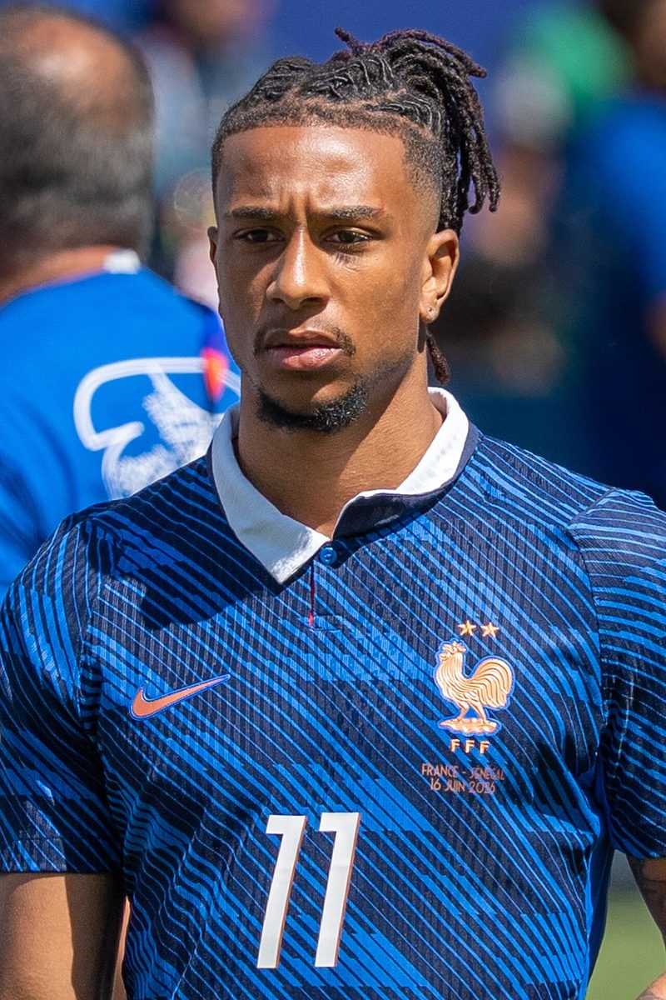

Дубль Пио Эспозито помог Италии обыграть Францию 3:1 — первое поражение Зидана
Италия отыгралась на «Сан-Сиро» и по личным встречам возглавила группу A1 Лиги наций за тур до конца группового этапа.

Что произошло
В четверг, 12 ноября 2026 года, на «Сан-Сиро» в Милане сборная Италии отыгралась и обыграла Францию 3:1 в матче Лиги наций. Это первое поражение Франции под руководством Зинедина Зидана.
Франция повела на 10-й минуте: вратарь Италии Джанлуиджи Доннарумма отдал мяч прямо Майклу Олисе, тот обыграл защитника и забил свой пятый гол в пяти матчах Лиги наций. На 26-й минуте Франческо Пио Эспозито сравнял счёт, замкнув прострел Николо Камбьяги с лицевой.

Около 60-й минуты Себастьяно Эспозито не реализовал пенальти, заработанный Камбьяги после фола Мало Гюсто. Через три минуты Даниэле Фраттези вывел Италию вперёд после навеса вышедшего на замену Федерико Димарко. Пио Эспозито закрепил победу с пенальти после фола Дайо Упамекано на Антонио Вергаре. Французы дважды попали в штангу — после ударов Брэдли Баркола и Райана Шерки.
Почему об этом говорят
Поражение прервало беспроигрышный старт Зидана в сборной Франции, а Италия под руководством Роберто Манчини впервые с 1962 года обыграла Францию дома. У французов из-за травм не играли Килиан Мбаппе и Усман Дембеле, а Адриен Рабьо впервые вывел команду с капитанской повязкой.
Ключевые факты и цифры

- Счёт: Италия — Франция 3:1 (1:1 после первого тайма).
- Голы: Олисе 10' (Франция); Пио Эспозито 26' и с пенальти, Фраттези (Италия).
- Группа A1: у Италии и Франции по 10 очков, у Бельгии 9; Италия первая по личным встречам. Турция замыкает таблицу после пятого поражения подряд.
- Италия: четыре матча без поражений.
Что дальше
Групповой этап завершится в воскресенье: матчи Бельгия — Италия и Турция — Франция определят итоговые места.